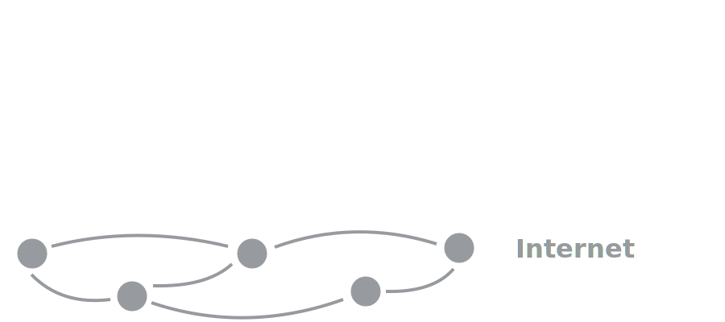
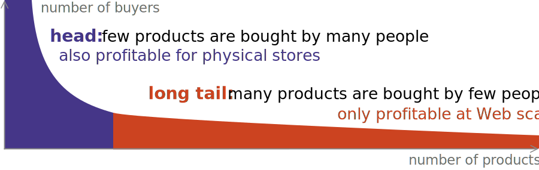
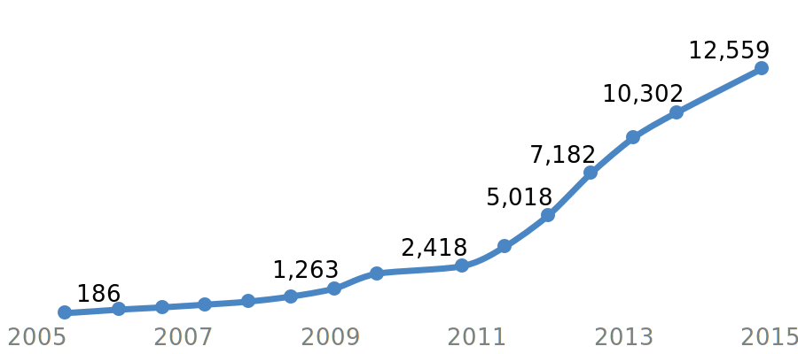
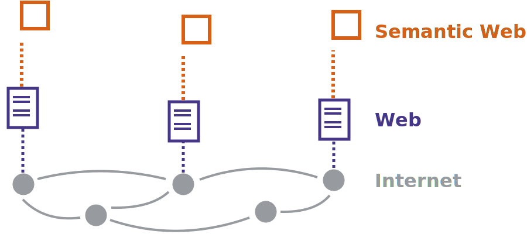
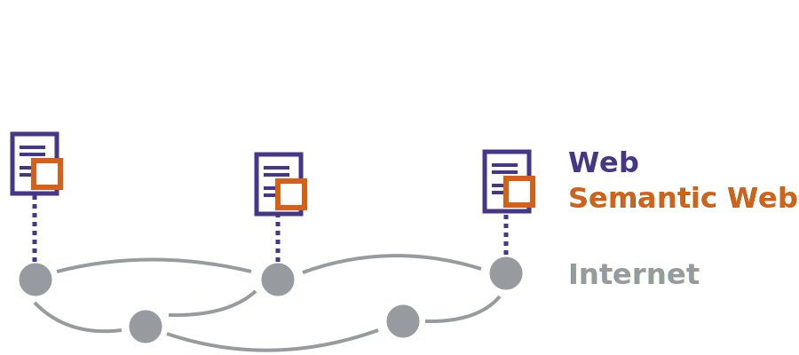

Which is the Internet
the Internet
a global communication network interconnecting devices
technologies:
the Web
an information space on top of the Internet
technologies:
The Internet is to Web whattelephone network is to fax .
The Internet is a communication network
between different machines in the world.

The Web is a layer of interlinked resources
accessible through the Internet.
The Internet contains more
on the Internet but not on the Web
e-mail
Skype
BitTorrent
VPN
…
on the Web but not on the Internet
The Web is perhaps
the most popular application of the Internet.
Billions of documents from all over the worldfree .
access without leaving home
access without leaving your car, train, or airplane
Surfing the Internet or surfing the Web?
The difference is difficult to explain whenWeb browser is called “Internet Explorer” 😉
Most people don't understand or care about the difference…
but you should!
©2015 Quartz / LIRNEasia
VIDEO
Ted Nelson: computer pioneer
book “Computer Lib”
collection of texts, notes, drawings published in 1974
teaches computer tinkering and programming
flip side: “Dream Machines”
visions on future computer applications
first written mention of hypertext
By hypertext I mean non-sequential writing—text
that branches and allows choices to the reader,
best read at an interactive screen.
As popularly conceived,
this is a series of text chunks
connected by links which offer the reader different pathways.
Ted Nelson, Literary Machines (1980)
Nelson's ideas were bigger than the Web,
Project Xanadu
OpenXanadu
published in 2014 as “a working deliverable”
…on top of the Web
Douglas Engelbart: visionary inventor,
invented the computer mouse
early developer of hypertext
strong proponent of computer networking
brought the revolutionary Mother of All Demos
in 1968:
graphical interface
networking
hypertext
…
VIDEO
Most of Engelbart's ideas never
The invention of the mouse got sold to Apple.
His group disbanded in the 1970s.
The world might have never heard of hypertext…
VIDEO
Tim Berners-Lee invented
CERN decided to make the Web
With the Web's client–server architecture,
nobody needs to know about others.
Servers don't need to know about clients.
Servers do not keep application state.
Clients don't need to know about other servers.
Clients follow links from one server to another.
Servers don't need to know about other servers.
Servers only maintain their own outgoing links.
Web linking is decentralized
because of one-way links inside documents.
essentials inside of HTML documents (not shared)
the rest outside of HTML documents (shareable)
styling (fonts, colors, …)
media (images, video, …)
scripts
The Web was the only hypertext system
Individual links are allowed to break
Tim Berners-Lee
The Web's operation-system independence
HTTP and HTML were OS-independent,
Support for other systems followed in 1992,Mosaic
gave the Web a broader audience.
The text-based browser Lynx
still exists.
The Web evolved together
1991: text (and links) only
1993: proposal for the <img> element
2002: video through the Flash player
2009: HTML5 <video> element in Firefox
Web technologies are standardized(W3C) .
Business evolved together
Pizza Hut allows to order online already in 1994.
Amazon and many others exploit the long tail .
niches that were previously too small to be profitable

Education evolved together
The free encyclopedia
Wikipedia started in 2001.
freely accessible knowledge for all
not always reliable though
Massive Open Online Courses
Communication evolved together
The Web is democratic.
everyone can read information
everyone can write information
Blogs emerged as a medium to spread thoughts.
The “Web 2.0” ideas made many usersprosumers .
Social media make global communication
Plenty of social networks exist.
If you're not paying, you're not the customer;you are the product.
Social media tend to create a filter bubble .
You only see more things like those you already saw.
You only see what confirms your prior beliefs.
The Web's architecture makes it hard
Since the Web is decentralized,
Crawlers from search engines traverse the Webindex of content.
Search engines select and rank content
Precision and recall are not as relevantranking ,
yielding a strong first page.
This gave rise to an entirely new business: SEO
Is search result personalization a filter bubble?
Even search queries are a valuable data source.
Feeds let you discover new content
An RSS feed contains the title and summary
specification co-authored by Aaron Swartz
By regularly polling such a feed,
no need to search/monitor the entire Web
Machines have only limited possibilities
on the “human” Web.
Browsers are operated by people.
How can we let machines access information?
How can we let machines perform actions?
Web APIs expose machine-accessible methods
from a server to a client.
“Web API” is typically used as a label
A Web service
is a software system designed
to support interoperable machine-to-machine interaction
over a network.
Web APIs can be implemented in different ways
Web APIs with Remote Procedure Calling
have few to do with the Web.
The client sends a structured request.
<request method="retweet" id="22896"/>
The server replies with a structured response.
<response status="success"/>
There's nothing intrinsically “Web” about this.
The Web acts as a convenient tunnel.
(Which firewall would block TCP port 80?)
Representational State Transfer Web APIs
expose functionality like a website.
The client requests a resource.
The server sends a representation.
The resource represented in XML, JSON, …
The client follows a link to another resource.
The number of Web APIs
number of Web APIsProgrammableWeb

Native online applications
Despite the power of Web applications,app .
“Don't you want to use our app instead?”
Motivated by technology or business?
Developers code a website, API, and mobile app.
Web APIs let machines execute scripts,content .
Machines do not “know” what Web content means.
Indexing webpages doesn't imply understanding them.
How can clients make sense of a webpage?
Can we somehow explain what is on there?
Can we help them make our lives easier?
Tim Berners-Lee and others proposedvision of intelligent Web agents.
By adding annotations to existing pages,
A network of knowledge is created
Don't know something? Follow the link to look it up!
Our personal devices will combine
The Semantic Web is a layer

The Semantic Web layer is integrated

Linked (Open) Data aims to bootstrap
The early Semantic Web suffered
Nobody built applications, because there was no data.
Nobody published data, because there were no apps.
Tim Berners-Lee proposed Linked Data
Let's get data out—apps will follow.
Billions of Linked Data facts
Google, Facebook, and others
However, the Semantic Web's killer app
Who needs the Semantic Web when
Apple's Siri and Google Nowon the Apple and Google servers.
Your phone is not smart; its servers are.
The Semantic Web is like the Web:
Understanding the Web should
Aaron is dead.
Wanderers in this crazy world,
Hackers for right, we are one down,
Nurturers, carers, listeners, feeders,
Let us all weep.
Tim Berners-Lee
This is not only a tribute to Aaron's achievements,
it also shows that anyone, regardless of who they are or where they come from,
can make an impact on the Web and thus the world.
VIDEO
Ted Nelson not only says goodbye to his best friend,
but also to an era and a vision.
Note his snarky comments about the Web,
not all of which are accurate.
The Web as I envisaged it,
The future is still so much bigger
Tim Berners-Lee
![[iMinds Logo]](../images/logos/iminds.svg)
![[Tim Berners-Lee and Vint Cerf at the W3C20 Anniversary Symposium]](images/tim-vint-back.jpg)
![[Tim Berners-Lee and Vint Cerf at the W3C20 Anniversary Symposium]](images/tim-vint-front.jpg)


![[Ted Nelson at at Keio University in 1999]](images/ted-nelson.jpg)
![[Douglas Engelbart in 2006]](images/douglas-engelbart.jpg)
![[Tim Berners-Lee at his desk in CERN, 1994]](images/tim-berners-lee.jpg)
![[Tim Berners-Lee's original proposal for what would become the Web]](images/vague-but-exciting.jpg)
![[The first Web server at CERN.]](images/first-web-server.jpg)
![[Aaron Swartz speaking at an anti-SOPA rally.]](images/sopa-pipa-protests.jpg)
![[Cover of Scientific American, May 2001]](images/scientific-american.jpg)
![[an iPhone running Siri]](images/siri.png)
![[Ted Nelson, Aaron Swartz, and Doug Engelbart at the 2001 International Semantic Web Working Symposium]](images/ted-aaron-doug.jpg)
![[Illustration from the blog post “The Web We Have to Save”]](images/web-we-have-to-save.jpg)
![[Photograph of Aaron Swartz]](images/aaron-swartz.jpg)
{kind=link}